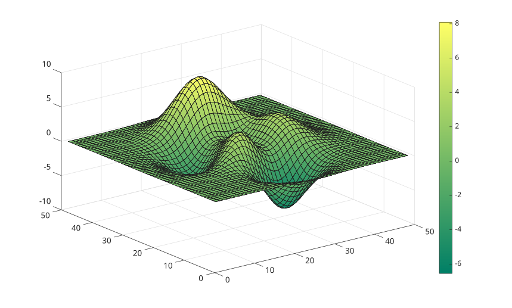
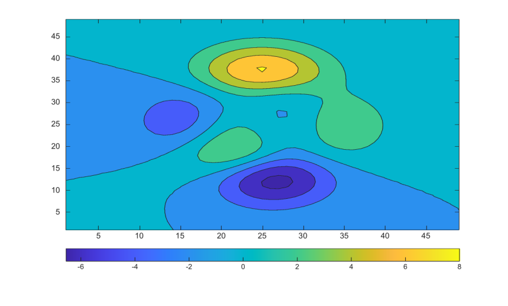
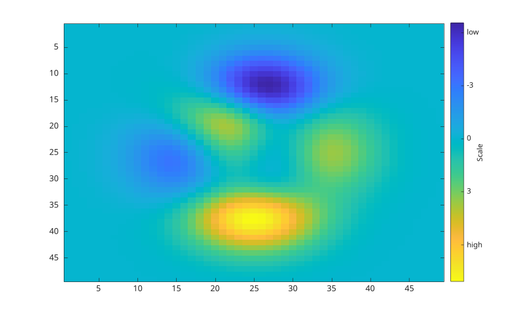
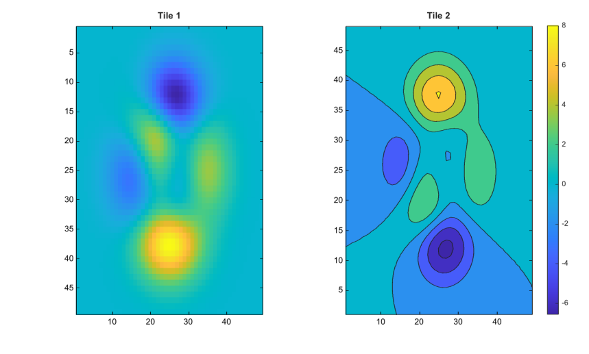

colorbar
colorbar(location)
colorbar(target, ...)
colorbar('peer', target, ...)
colorbar(..., propertyName, propertyValue)
colorbar('off')
colorbar('delete')
colorbar('hide')
colorbar(target, 'off')
colorbar(c, 'off')
c = colorbar(...)
| Paramètre | Description |
|---|---|
| location | Emplacement de la barre de couleur : 'eastoutside', 'westoutside', 'northoutside', 'southoutside', 'east', 'west', 'north', 'south' ou 'manual'. Les valeurs 'horizontal' et 'vertical' sont acceptees comme alias de compatibilite de 'southoutside' et 'eastoutside'. |
| target | Axes auxquels appartient l'echelle de couleurs. Si la cible est omise, les axes courants sont utilises. |
| c | Objet graphique colorbar. |
| propertyName, propertyValue | Paires nom-valeur appliquees aux proprietes de la barre de couleur lors de sa creation. |
| 'off', 'delete', 'hide' | Supprime la barre de couleur associee aux axes courants, aux axes specifies ou a la barre de couleur specifiee. |
| Paramètre | Description |
|---|---|
| c | Objet graphique colorbar. |
colorbar ajoute une echelle de couleurs a un graphique. La barre de couleur est un objet graphique rattache a la figure et associe a des axes.
L'emplacement par defaut est eastoutside. Les emplacements externes reservent de la place pres des axes. Les emplacements internes dessinent la barre de couleur dans la zone des axes. Affecter la propriete Position passe Location a manual.
La propriete Location accepte aussi layout pour les dispositions en tuiles. Utilisez colorbar(ax, 'Location', 'layout') puis affectez c.Layout.Tile avec un numero de tuile ou avec 'east', 'west', 'north' ou 'south'. La forme positionnelle colorbar(ax, 'layout') n'est pas acceptee.
Les proprietes visuelles importantes incluent Box, Color, Direction, FontAngle, FontName, FontSize, FontWeight, Limits, LineWidth, AxisLocation, TickDirection, TickLabelInterpreter, TickLabels, TickLength, Ticks, Units, Visible et Label.
Les valeurs automatiques de Limits, Ticks et TickLabels sont mises a jour depuis les limites de couleur et la palette des axes associes. Affecter Limits, Ticks, TickLabels, AxisLocation ou Position passe la propriete de mode correspondante en manuel lorsque c'est approprie.
Voir proprietes de colorbar pour la liste complete des proprietes.
figure();
surf(peaks);
colormap('summer');
colorbar;
figure();
contourf(peaks);
colormap('parula');
colorbar('southoutside');
figure();
imagesc(peaks);
cb = colorbar('Ticks', [-6 -3 0 3 6], ...
'TickLabels', {'low'; '-3'; '0'; '3'; 'high'});
cb.Label.String = 'Scale';
cb.Direction = 'reverse';
figure();
t = tiledlayout(1, 2);
ax1 = nexttile(t);
imagesc(peaks);
title(ax1, 'Tile 1');
ax2 = nexttile(t);
contourf(peaks);
title(ax2, 'Tile 2');
cb = colorbar(ax2, 'Location', 'layout');
cb.Layout.Tile = 'east';
locations = {'north'; 'south'; 'east'; 'west'; ...
'northoutside'; 'southoutside'; 'eastoutside'; 'westoutside'};
figure();
surf(peaks);
colormap('jet');
for k = 1:length(locations)
colorbar(locations{k});
pause(1);
end| Version | Description |
|---|---|
| 1.0.0 | version initiale |
| 1.15.0 | ajout du support de l'argument location |
| 2.0.0 | reimplementation comme objet graphique colorbar natif |